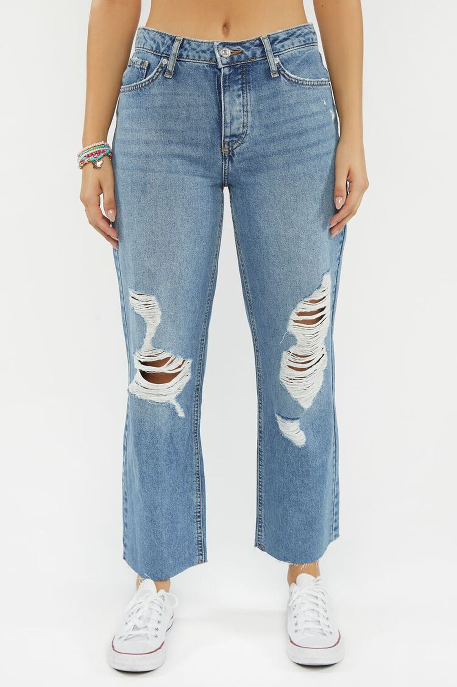

Un par de mom jeans holgados con construcción desgastada, de tiro medio, cinco bolsillos y trabillas para el cinturón.  Un par de mom jeans con un lavado a la piedra por toda la prenda, tiro alto, bigotes, una construcción de cinco bolsillos, cremallera con cierre de botón, trabillas para el cinturón y detalles desgastados en la rodilla. Un par de mom jeans que presentan un diseño muy desgastado, con bigotes, una construcción de cinco bolsillos, trabillas para el cinturón y talle alto. Un par de mom jeans con tiro alto, trabillas para el cinturón, patillas ligeras, construcción de cinco bolsillos y dobladillo sin rematar. Un par de mom jeans con bigotes, una construcción de cinco bolsillos y tiro alto.
Un par de jeans de pierna recta con un ajuste de los años 90, tiro alto, construcción de cinco bolsillos y trabillas para el cinturón. Un par de mom jeans con corte petite, tiro alto, trabillas y bigotes. Un par de jeans que presenta una silueta que se ajusta desde la cintura hasta el muslo, una pierna acampanada, tiro alto y bolsillos traseros de parche. Un par de jeans con bolsillos delanteros de carga e inclinados, trabillas para cinturón y talle alto. Un par de jeans con gráficos de mariposas por toda la prenda, una construcción de cinco bolsillos, pierna recta, tiro alto y trabillas para el cinturón.